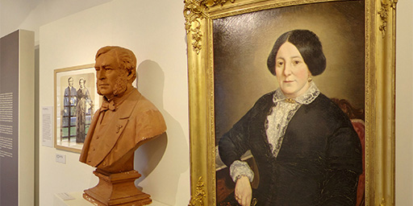
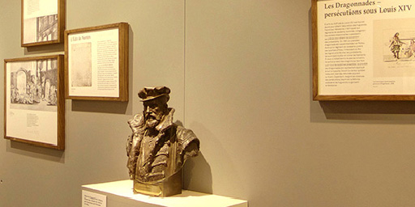
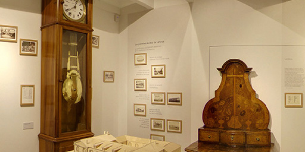
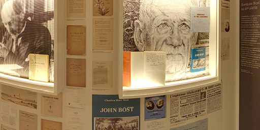
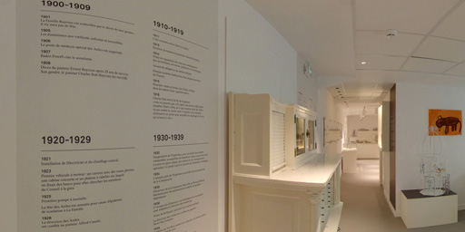
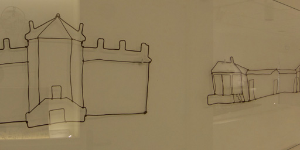

SALLE 1
Une oeuvre prophétique : les Asiles de Laforce

SALLE 2
L'émergence du protestantisme et l’histoire de la famille Bost

SALLE 3
John et Eugénie Bost : l’oeuvre de leur vie

SALLE 4
Quelques Bost au XXème siècle

SALLE 5
La Fondation John BOST aux XXème et XXIème siècles

SALLE 6
Espace “un autre regard”
